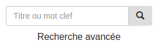
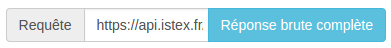

Bienvenue sur le démonstrateur de l'API ISTEX!
Avant toute chose, ce site ne constitue pas une portail sur l'API. Il s'agit ici de montrer les différents aspects de l'API ISTEX. Le corps du site peut cependant être matière de base à la construction d'un portail. Le code sera bientôt disponible publiquement.
Pour effectuer une recherche :

Entrer votre requête simplement dans le champs "Titre ou mot clef". La recherche se lance dès que ce champ est renseigné. Vous pouvez également sélectionner "Recherche avancée" pour mieux préciser votre recherche. Il est dans ce cas nécessaire de cliquer sur l'icone en forme de loupe pour démarrer la recherche.
Pour comprendre comment ces résultats sont obtenus :

Une fois la requête effectuée, il est possible de consulter la réponse brute fournie par l'API en cliquant sur le bouton correspondant. La requête envoyée est également visible à gauche du bouton précédent.
Pour toute aide supplémentaire ou suggestion, vous pouvez nous écrire à istex@inist.fr (lien disponible en bas de page).
Requête
Réponse brute complète de l'API
Affiner les résultats
Corpus
Corpus
Cette facette permet de préciser le corpus éditeur sur lequel porte la requête.
Les choix proposés par les facettes dépendent de vos critères de recherche et de recherche avancée
ISTEX API Documentation:
Morceau de la requête généré par la facette:
Copyright
Copyright
Cette facette permet de préciser la période de copyright sur laquelle porte la requête.
Les choix proposés par les facettes dépendent de vos critères de recherche et de recherche avancée
ISTEX API Documentation:
Morceau de la requête généré par la facette:
Publication
Publication
Cette facette permet de préciser la période de publication sur laquelle porte la requête.
Les choix proposés par les facettes dépendent de vos critères de recherche et de recherche avancée
ISTEX API Documentation:
Morceau de la requête généré par la facette:
| Résultats obtenus : |
|---|